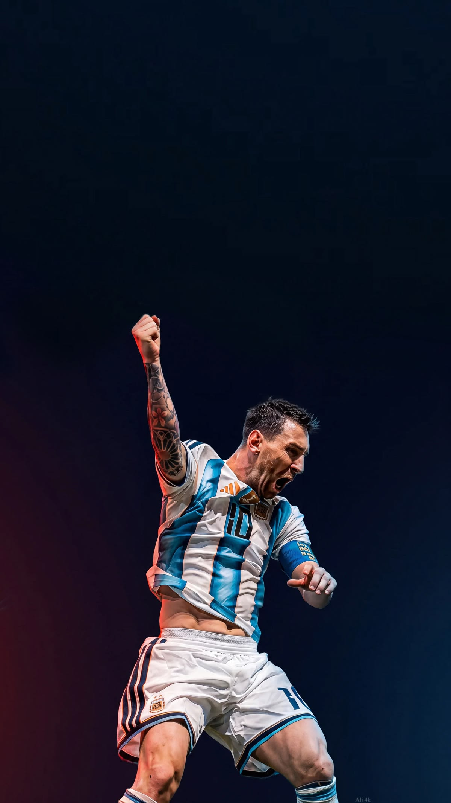

A hall of fame for the legends who hung up their boots — remembered, celebrated, never forgotten.
Every great player has a chapter here. Scroll into the park and visit the greatest to retire first.
We begin with the greatest. More retired icons will be honoured here — one chapter at a time.

Eight Ballons d'Or. A World Cup. 872 career goals. From a napkin in Barcelona to the summit of the game — the greatest to ever play it.
More retired legends are joining the park. The next chapters are being written.
The Retirement Park exists so that the men and women who shaped football can always be visited. Their goals, their trophies, their heartbreak and their triumph — preserved here as memory and honour.